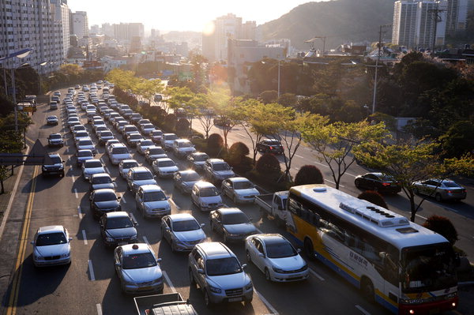
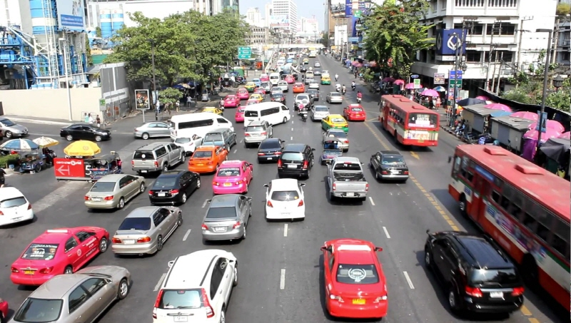
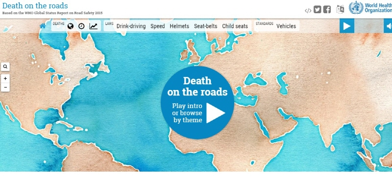

지난해 전세계에서 교통사고 사망자가 많이 발생한 곳은?
[오토데일리 박상우 기자] 지난해 전세계에서 교통사고 사망자가 가장 많이 발생한 곳은? 25일(현지시간) 세계보건기구(WHO)는 ‘2015년 글로벌 교통사고 리포트(http://roads.live.kiln.digital/)’를 발표했다. 이 리포트는 지난해 각 국에서 발생한 교통사고에 따른 사망자수, 부상자수 등을 다각도 분석한 것으로 이를 통해 각 국의 교통안전시스템을 확인할 수 있다. 지난해 전세계에서 교통사고로 사망한 사람은 124만7,021명으로 인구 10만명당 17.4명이 도로에서 목숨을 잃은 것으로 추정된다. 대륙별로 살펴보면 아프리카(모로코, 튀니지, 리비아, 이집트, 수단, 소말리아 제외)가 26.6명으로 전세계 평균인 17.4명보다 높은 것으로 나타났다. 이어 중동아시아와 일부 북아프리카를 포함한 지역이 19.9명으로 뒤를 이었다. 반면 사망자수가 가장 낮은 대륙은 유럽(카자흐스탄, 우즈베키스탄 등 중앙아시아 포함)으로 여러 대륙 중 유일하게 10명 아래인 9.3명을 기록했다. 나라별로는 북아프리카에 위치한 리비아가 가장 많은 사망자수를 기록한 것으로 나타났다. 지난해 리비아에서 교통사고로 사망한 사람은 4,554명으로 인구 10만명당 73.4명이 사망한 것이다. WHO는 음주운전, 속도위반, 어린이 카시트 장착 등 교통안전법규가 제대로 갖춰지지 않아 이같이 높은 수치가 나타났다고 분석했다.
다음으로 사망자수가 높은 곳은 동남아시아에 있는 태국으로 지난해 태국에서 교통사고로 목숨을 잃은 사람은 총 2만4,237명으로 인구 10만명당 36.2명이 사망한 셈이다. 태국도 리비아와 마찬가지로 교통안전법규가 제대로 마련되지 않은 것이 높은 수치를 기록한 원인으로 지목되고 있다. 반면 사망자수가 가장 낮은 곳은 오세아니아에 있는 미크로네시아이다. 미크로네시아는 필리핀 동쪽에 있는 섬나라로 서울(605.21㎢)보다 약 100㎢ 더 크다. 인구수는 10만5,216명(2015년 기준)이다. 지난해 미크로네시아에서 교통사고로 목숨을 잃은 사람은 단 2명으로 인구 10만명당 1.9명이 사망한 셈이다. 이어 낮은 곳은 북유럽에 있는 스웨덴이다. 지난해 스웨덴에서 교통사고로 사망한 사람은 272명으로 인구 10만명당 2.8명이 사망했다. WHO는 엄격한 음주운전 법률과 높은 차량 안전 기준 등이 영향을 준 것으로 분석했다. 한국의 경우 지난해 교통사고 사망자수는 5,931명으로 인구 10만명당 12.0명이 목숨을 잃은 것으로 나타났다고 WHO는 밝혔다. 세부적으로 살펴보면 자동차 운전자 사망자수는 4.0명, 오토바이 운전자 사망자수는 2.0명, 자전거 운전자 사망자수는 0.7명, 보행자는 4.7명으로 나타났다.
WHO는 현재 세계에서 30초마다 1명이 교통사고로 사망하고 20명이 부상을 당하고 있다고 밝혔다. 한편 올해 1월부터 11월 28일(오전 11시30분 현재)까지 세계에서 교통사고로 사망한 사람은 113만9,328명이다.